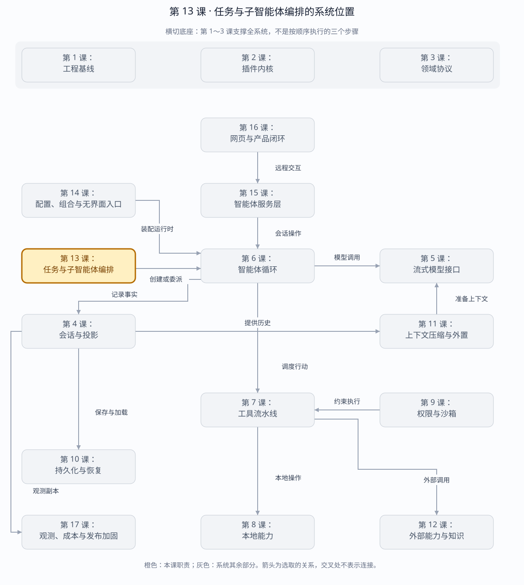

第 13 课：Jobs、子 Agent 与 Workflow
并发不是 Promise.all 本身，而是身份、所有权、取消、资源收敛和可观察生命周期共同组成的控制面。
章节概览（可选）：三框架职责摘要
本章对比：DeepSeek Harness / DeepAgents / OpenHands
口径：DeepSeek 依据本地原仓库（99f6f02fecdb），不是 harness-lab；deepagent 按 LangChain DeepAgents 理解；OpenHands 对比当前 Software Agent SDK，不混用旧 V0。在线资料核对于 2026-08-28，描述文档能力，不代表已在本实验室安装或测试。没有依据的同名能力不强行等同。
三者的关键区别：“支持多 agent”远不够：还要对齐等待方式、上下文隔离、取消归属、结果持久化和继续执行语义。（基于上述依据的归纳）
本章在全系统中的位置
位于单智能体循环之上的工作协调层，可创建或等待多个执行单元。
下面是本课程的概念地图，不是某框架的逐包调用图，也不表示实验室已默认装配全部能力。三套框架的实际对应关系见上方横向对比表。
全系统定位 · 橙色高亮第 13 课
打开大图 · Mermaid 图源
| 上游与输入 | 父任务的委派请求、子任务说明、取消和等待条件。 |
|---|
| 下游与输出 | 子任务身份、进度、结果与失败，返回父任务。 |
|---|
| 不归本章负责 | 工具并行、后台 Job、子智能体和持久 Workflow 不是同一能力；必须分别核对。 |
|---|
| 放进具体场景 | 父任务把检索交给子智能体，继续或等待由编排策略决定；取消父任务时还要明确子任务是否随之停止。 |
|---|
接着看下方「可视化图解」：局部模块图解释职责，时序图解释一次调用，分支图解释异常与边界。
本课导览
| 包含内容 | 后台任务、流式输出、任务所有权、子智能体、父子谱系、工作流并发与预算。 |
|---|
| 涉及模块 | JobRuntime、SubagentRuntime、子智能体提供方、WorkflowEngine、工作线程。 |
|---|
| 白话解释 | 把大任务拆给多个工人时，不只要让他们同时开工，还要知道谁负责、怎么取消、何时汇合和如何收尾。 |
|---|
| 解决的问题 | 控制并发任务的身份、权限、资源和生命周期，避免任务泄漏、结果串线或父任务结束后子任务仍失控运行。 |
|---|
点击下面的概念名称，可直达该概念的三框架实现、区别与依据。原有能力清单、示例和验收描述面向 harness-lab 教学实现；不要将其直接当作上游框架能力声明。
完整能力清单
| 能力域 | 完整能力 | 收敛规则 |
|---|
| 后台任务创建 | 分配稳定标识，绑定可选所有者、生产方终止钩子和完成承诺。 | 启动失败不消耗任务标识。 |
| 任务输出 | 追加流式文本、单消费游标读取、快照查询和幂等最终输出。 | 监听器异常与任务状态隔离。 |
| 任务状态机 | 运行、停止中、完成、已终止和失败；终态由第一次提交决定。 | 终止先通知生产方，再提交停止中。 |
| 所有权 | 私有任务只能由所有者查看或操作，无所有者任务可共享。 | 释放所有者时取消、等待并移除全部私有任务。 |
| 任务等待 | 支持完成等待、超时和等待者取消。 | 等待超时或取消不等于取消后台任务。 |
| 子智能体选择 | 显式或唯一提供方选择，检查可用性、深度、输出模式、工具过滤和角色能力。 | 能力校验在启动发布前完成。 |
| 子智能体生命周期 | 开始握手成功后发布开始事件，结束原因规范化并与运行标识唯一配对。 | 启动失败不伪造开始事件，父取消向下传播。 |
| 工作流 | 工作线程脚本动态发起子智能体，支持阶段、并发上限、总数上限、扇出扇入和显式结果。 | 超限或脚本失控时取消子任务并在宽限期后强制收敛。 |
主概念深挖：受控并发编排
并发编排位于父 Agent 或工作流请求的下游、后台生产者和子智能体的上游，负责让并行工作具备身份、所有权和确定收敛。
Parent Agent / Workflow Script（输入）
│ spawn / agent()
▼
WorkflowEngine（预算、阶段、并发）
│
▼
SubagentRuntime（能力与深度校验）
│
▼
JobRegistry（所有权、输出、状态）
┌─────┼────────┐
▼ ▼ ▼
Child A Child B Child C
└─────┴────────┘
▼
汇合结果 + 生命周期事件（输出）
| 背景与目的 | Promise.all 只能等待并发承诺，无法回答任务属于谁、怎样读流输出、父任务取消后谁负责收尸。 |
|---|
| 输入与输出 | 输入是任务启动器、所有者、子智能体请求、工作流脚本和预算；输出是任务快照、流式文本、子结果、工作流结果及生命周期事件。 |
|---|
| 适用场景 | 后台构建、并行代码调研、父 Agent 委派、扇出扇入工作流和有限资源池。 |
|---|
| 底层组件 | 任务状态机、单消费游标、完成承诺、终止钩子、子智能体提供方、工作线程消息协议和并发信号量。 |
|---|
| 核心逻辑 | 先验证能力与预算，再发布稳定运行标识；输出与状态集中进 Job；工作流只通过消息驱动子任务；任何超限或取消都沿所有权树向下收敛。 |
|---|
| 权衡 | 集中控制面增加状态管理，却换来资源上限、隔离、可观测和确定清理；并发度限制会牺牲峰值速度以保护系统。 |
|---|
| 方案对比 | 裸 Promise 适合短小同进程工作；作业队列适合持久分布式任务；本实现位于两者之间，专注单宿主可取消 Agent 编排。 |
|---|
场景穷举
并发工作
├─ 前台等待 Job → 流式读取 → completed
├─ 等待超时 → 只停止等待，Job 继续
├─ kill → producer.stop → stopping → 首个终态
├─ owner 释放 → kill + wait + remove 私有 Jobs
├─ Subagent 启动失败 → 不发布 start
├─ 父取消 → 向全部子运行传播
├─ Workflow 超并发 → 排队
├─ Workflow 超总数 → 拒绝并取消已启动子任务
└─ worker 忙循环 → 宽限后强制终止
| 场景 | 控制面行为 | 不变量 |
|---|
| 后台长任务 | Job 独立运行，调用方分段读取输出。 | 只有一个消费游标，最终结果幂等。 |
| 多个所有者 | 各自只能查看私有任务，共享任务所有人可见。 | 任务标识不能泄露所有者信息。 |
| 子能力不匹配 | 在 provider.start 前拒绝。 | 没有伪造生命周期和外部资源。 |
| 扇出扇入 | 并发限制内启动，等待所有需要的子结果。 | 结果映射按脚本标识稳定关联。 |
| 部分失败 | 脚本决定继续、降级或取消其余子任务。 | 每个子运行仍独立闭合。 |
| 父级退出 | 沿所有权树取消并等待。 | 不能留下私有孤儿任务。 |
多方案对比
| 方案 | 持久性 | 控制能力 | 适用场景 |
|---|
| Promise.all | 仅进程内。 | 基本等待，取消和所有权弱。 | 短小同生命周期任务。 |
| 本地 Job/Subagent Runtime | 状态在进程内，结果可接会话日志。 | 所有权、流输出、取消、预算完整。 | 单宿主 Agent 并发。 |
| 持久作业队列 | 跨进程重启。 | 重试、租约和分布式调度。 | 长任务和多节点。 |
| 工作流平台 | 强持久。 | 补偿、定时、人工节点。 | 业务级长期流程，运维成本最高。 |
关键设计反问
- 等待超时为什么不取消 Job？
- 超时描述等待者的耐心，不代表生产任务应停止；把两者绑定会让旁观者意外终止共享工作。
- 为什么 start 事件必须在 provider 握手后发布？
- 发布即承诺存在一个可管理运行；握手失败前发布会留下无法取消、无法查询的幽灵子任务。
- 并发上限和总数上限有何不同？
- 并发上限控制瞬时资源，可排队；总数上限控制整个工作流爆炸，即使串行创建也必须拒绝。
三层职责
Workflow Engine（动态脚本、phase、fan-out/fan-in、预算）
│ agent()
▼
Subagent Runtime（provider 选择、能力/深度校验、start/end 配对）
│ 可选后台化
▼
Job Registry（id、owner 鉴权、output cursor、wait/kill、清理）
| 层 | 拥有 | 不拥有 |
|---|
| Job Registry | 身份、状态、访问、通知 | 进程/Agent 等执行资源 |
| Subagent Runtime | provider 选择、发布边界、run 生命周期 | 具体模型/进程实现 |
| Workflow Engine | worker、脚本预算、child 汇合 | child Agent 的内部 loop |
后台任务创建：三框架分别怎么做？
同一个问题：启动返回 id 时，工作已经处于什么状态？
这个概念的区别：立即返回的作业句柄与同步工具最终结果是不同接口，不能仅按 task 命名对齐。
Job 状态机
start preflight ── run() throws ──► 无记录、id 不消耗
│
▼
running ── kill() 成功 ──► stopping
│ │
└──────── done ───────────┘
▼
completed | killed | failed
wait timeout / wait Abort：只离开等待，不取消 Job
owner dispose：cancel → await done → 删除 private record
Job ID 是可预测的 <kind>-N，所以安全边界必须是 owner session 鉴权。unknown 与 foreign 返回相同错误，避免枚举侧信道。
任务输出：三框架分别怎么做？
同一个问题：重复读取输出，是增量消费还是重读最终结果？
这个概念的区别：界面展示进度、模型读取增量和收集最终答案需要分别选择接口。
任务状态机：三框架分别怎么做？
同一个问题：取消请求成功，是否等于工作已结束？
这个概念的区别：状态必须标明描述的是控制请求、某次 run，还是底层生产者完全停稳。
所有权：三框架分别怎么做？
同一个问题：谁能控制任务，谁销毁时负责清理？
这个概念的区别：展示归属、访问权限和资源清理责任是三件事；知道 id 不能自动取得控制权。
任务等待：三框架分别怎么做？
同一个问题：等待者超时或取消，会不会停止生产任务？
这个概念的区别：等待超时表达观察者的耐心；取消任务表达对生产者的控制，不应混用。
子 Agent 发布边界
- 检查 provider 是否存在、可用。
- 检查 output schema、深度、工具过滤、persona 是否被 provider 支持。
provider.start() 完成握手并发布 child。- 只有此时才发出
subagent/start。
- 任何终态归一为不会 reject 的 result，并发出唯一配对
subagent/end。
dispose() 取消剩余工作并等待资源静止。
子智能体选择：三框架分别怎么做？
同一个问题：名称选择的是角色、执行提供方，还是部署图？
这个概念的区别：同一个“研究员”名称可能是角色标签、工厂名或部署路由，不能把可替换层级画成一样。
子智能体生命周期：三框架分别怎么做？
同一个问题：子任务完成后，能否继续给同一个子智能体发消息？
这个概念的区别：必须分别比较身份持续性与本次运行的收集方式；可恢复不等于始终后台驻留。
Workflow worker
worker: phase()/log()/agent() ── message ──► Host
│ semaphore
│ maxTotalAgents
▼
Subagent Runtime
│ result/null
worker Promise 恢复 ◄──────── agent-result ┘
脚本运行在独立 Worker Thread，因此死循环不会卡住 Host event loop。Worker 不是安全沙箱；脚本必须来自可信来源。取消先传播给所有 child，并等待 dispose；只有超过 cancelGraceMs 才强制终止。
工作流：三框架分别怎么做？
同一个问题：多步编排是否自动获得跨重启恢复？
这个概念的区别：保存子任务历史、保存编排进度、回滚外部副作用是三个不同等级的能力。
运行与调试
cd harness-lab
bun run demo:orchestration
VS Code F5 → 12a · 后台任务
VS Code F5 → 12b · 子智能体
VS Code F5 → 12c · 工作流
# 推荐断点
# LocalJobRegistry.start/#settle/#authorized
# SubagentRuntime.start：preflight 与 publication
# WorkflowEngine.start：worker message router
# executeAgent：semaphore、child start/end、dispose
# cancel：协作取消与 grace 强制边界
源码
拓展阅读
Jobs、Subagent 与 Workflow 深度解读：DeepSeek Harness、Deep Agents、OpenHands 的真实实现、差异、限制与完整 QA →
DeepSeek Harness 的 Session Event Log 恢复与 OTel Logs：Job、Workflow、Subagent 的持久化与冷恢复边界 →
下一课实现 Profile、Bundle、CLI 与 Headless Host，把零散插件装配成可部署产品入口。
返回完整路线 →